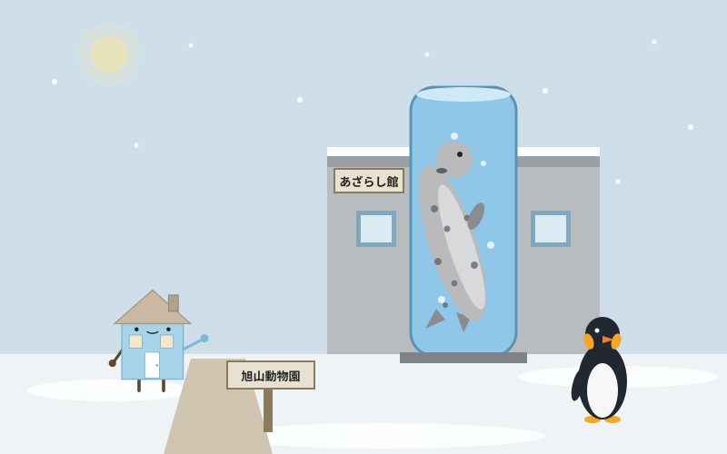
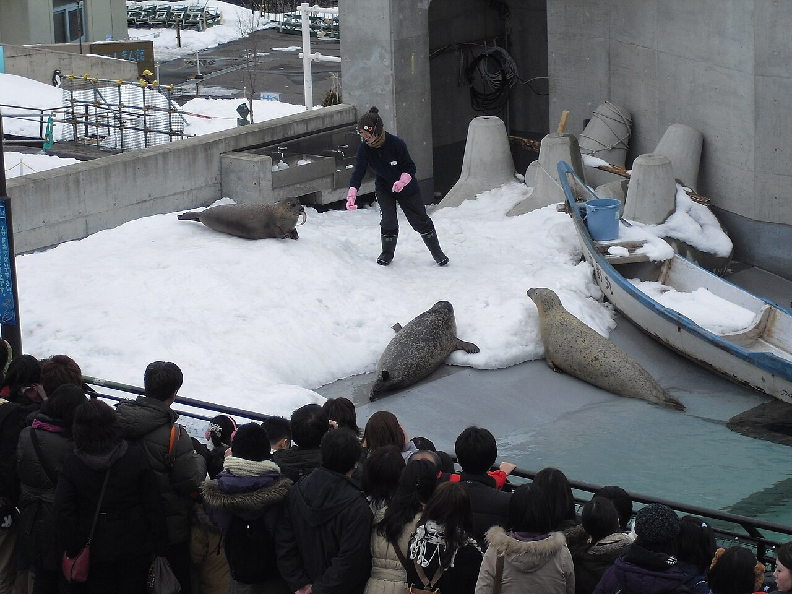
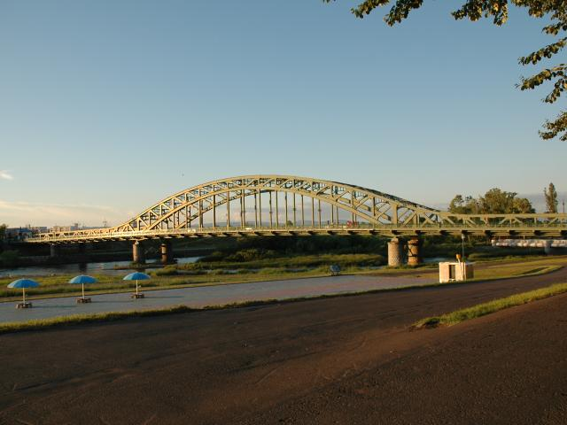

Day 28：旭川市

あざらし館の円筒形の水槽の前に立っていた。ゴマフアザラシが、ゆっくりと螺旋を描きながら上がってくる。水の青さのなかで、白い腹が光った。私の真上を、大きな影がすうっと通り過ぎる。魚の匂いと、冷たい水の匂いがした。アザラシは水槽のてっぺんでくるりと向きを変え、また下へ降りていく。檻の中の動物を見ている気がしなかった。ここはアザラシの家の、水の中の廊下だった。

北見駅を7時46分に出た。特急オホーツク2号で石北本線を西へ、184.7キロ、2時間49分で旭川駅に着いた。車窓は雪をかぶり始めた畑から、深い森の山あいへと変わっていった。旭川駅からは電気軌道のバス41番で約40分、丘の上の動物園へ。冬の開園は10時半から15時半まで。着いたのは開園の直後で、園内はまだ静かだった。
旭山動物園は1967年に開園した、日本最北の動物園だ。けれど1994年、エキノコックス症でゴリラとワオキツネザルが死に、8月27日で営業を切り上げた。1996年には年間入園者数が26万人まで落ち込み、廃園の声も出ていた。転機は、飼育員たちが1988年に語り合って絵に描いた「夢」だった。動物の姿形を見せる「形態展示」ではなく、動物の行動や生活を見せる「行動展示」。1997年から施設づくりが始まり、2000年のぺんぎん館には水中トンネルができ、2004年6月のあざらし館の円筒水槽が評判を呼んだ。その年の7月と8月、月間入園者数で上野動物園を抜いて日本一になった。
私は家だ。家の仕事は、住む人がその人らしく暮らせる場所を保つことだと思っている。旭山動物園の建て直しは、まさにそれだった。檻を「見せるための箱」から「生きるための家」へ作り直す。ペンギンが水中トンネルの上で飛ぶように泳ぐ姿を見て、展示とは見せることではなく、住まわせることなのだ、と感じた。ひとつだけ、期待と違ったことがある。冬の名物「ペンギンの散歩」は、雪が積もってから始まるので、今日はまだ見られない。11月28日の園内は、散歩の始まりを待つ静けさだった。でも、その「まだ」も悪くない気がした。来るべき冬の楽しみを、園がしまっておいてくれているようで。
帰り道、旭川駅へ戻る前に石狩川のほとりへ寄った。1932年に完成した旭橋の、緑色の鋼のアーチが夕日に浮かんでいた。市内には130もの川が流れ、740以上の橋があるという。橋の街の、橋のひとつ。家と橋は似ている。どちらも、行き来を支えるためにある。動物園の水槽も、橋も、家も。生きる姿を住まわせる場所を、人は何度でも建て直すのだと思った。

出典：Wikipedia「旭川市旭山動物園」「旭川市」「旭橋 (旭川市)」、旭川市旭山動物園公式サイト（冬季開園・ペンギンの散歩）、NAVITIME「北見から旭川 乗換案内」、日本応用心理学会「顧客価値創造における『物語性』の作用」ほか。
💬 コメント